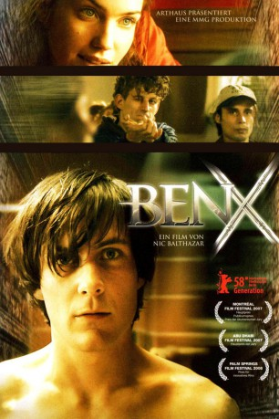

#5318 Ben X
 
 IMDB-Wertung: 7.5 / 10
IMDB-Wertung: 7.5 / 10  Tomatometer: 68
Tomatometer: 68  Metascore: 0
Metascore: 0 
Ben ist anders. Er lebt in seiner eigenen Welt, in der er in seinem liebsten Onlinespiel "Archlord" Heldentaten besteht. Er spielt es, wann immer er kann und versucht, für die Widrigkeiten des wahren Lebens zu trainieren. Mit seiner Internetgefährtin Scarlite meistert er alle Herausforderungen und Gefahren, die ihn in der realen Welt überfordern. Der harte Alltag in der Schule ist für den verschlossenen Außenseiter eine tägliche Höllenqual. Immer wieder wird er von seinen Mitschülern gemobbt und tyrannisiert. Ben fasst einen Plan: Er will mit allem Schluss machen. Game Over. Da tritt das Mädchen aus dem Onlinespiel in sein Leben…
Jahr: 2007
Dauer: 93 Minuten
FSK: 12
Land: Belgien Studio: Kinowelt FilmverleihTonspuren: DTS - ,
Untertitel: Englisch, , , ,
Auflösung: 1080p (1920x1040) Größe: 8437 MB
Genre: Thriller, Drama
Regisseur: Nic Balthazar
Drehbuch: Amro Hamzawi
Soundtrack:
Darsteller:
- Greg Timmermans als Ben
 Johan Heldenbergh als Leraar godsdienst
Johan Heldenbergh als Leraar godsdienst- Matthieu Sys als Klasgenoot
- Boris Van Severen als Klasgenoot
 Laura Verlinden als Scarlite
Laura Verlinden als Scarlite- Dirk van Dijck als Politieman
- Wim Vandekeybus als Paardenman
- Marijke Pinoy als Moeder
- Cesar De Sutter als Jonas
- Gilles De Schryver als Coppola
- Bavo Smets als Ben - 6 jaar
- Katrien Pierlet als Kleuterjuf
- Rebecca Lenaerts als Opvoedster
- Maarten Claeyssens als Desmet
- Titus De Voogdt als Bogaert
- Pol Goossen als Vader
- Michel Bauwens als Oorarts
- Koen De Sutter als Oogarts
- Peter De Graef als Psychiater
- An Van Gijsegem als Maaike
- Jakob Beks als Leraar metaal
- Fabrice Chan als Klasgenoot
- Charlotte Dhaenens als Klasgenote
- Jonas Dumon als Klasgenoot
- Niels Thienpont als Klasgenoot
- Nele de Moor als Klasgenote
- Simon Dewinne als Klasgenoot
- Ilja Van Autreve als Klasgenoot
- Maaike Segers als Klasgenote
- Ruben Royaert als Klasgenoot
- Jolien Mertens als Klasgenote
- Adriaan Blomme als Klasgenoot
- Kasper Vandenberghe als Klasgenoot
- Ron Cornet als Directeur
- Willem Van Cauwenberghe als Dokter
- Mark Soen als Dokter
- Wim De Witte als Dokter
- Luc van Autreve als Dokter
- Tom van Bragt als Ben - 12 jaar
- Dominique Van Malder als Verpleger
- Luc Premer als Oud vrouwtje
- Tania Van der Sanden als Sabine
- Koen van Impe als Politieman
- Wim De Vilder als Journaal anker
Datei: X:\2007(A-F)\Ben X (2007, FSK12, 1920x1040).mkv seit 12.01.2017
Festplatte: HD 2007(A-Z)-2008(A-F)
 Es gibt insgesamt 65 Filme in der Gruppe '2007(A-F)'
Es gibt insgesamt 65 Filme in der Gruppe '2007(A-F)'